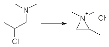
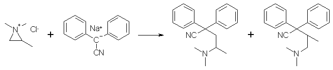
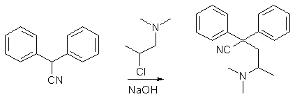
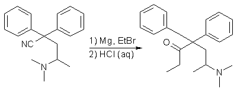
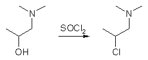
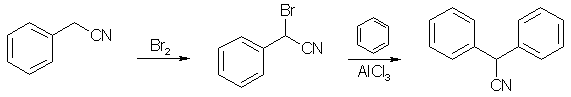

Introduction
Methadone (6-dimethylamino-4,4-diphenyl-3-heptanone, Amidone) is a synthetic opioid developed during World War II by the german chemists Bockmühl and
Erhart working for the Hoechst Laboratories of IG Farben8,10.
The pure levo-methadone isomer is 1.5-2.4 times stronger than the racemic mixture, but this small difference usually does not warrant isomer
separation. The separation is unusually easy to perform though, as treatment of racemic methadone base with d-(+)-tartaric acid in an acetone/water mixture
precipitates almost solely the dextro-methadone levo-tartrate, and the more potent levo-methadone can easily be retrieved from the
mother liquor in a high state of optical purity11.
The reaction scheme for the synthesis of Methadone begins with the alkylation of the anion of diphenylacetonitrile (produced by reacting a
strong base with diphenylacetonitrile) with 1-dimethylamino-2-chloropropane, which produces a mixture of two isomeric nitriles, one high-melting (commonly
referred to as methadone nitrile), 2,2-Diphenyl-4-dimethylaminovaleronitrile (mp 91-92°C) and one low-melting (isomethadone nitrile,
2,2-Diphenyl-3-methyl-4-dimethylaminobutyronitrile (mp 69-70°C). The high-melting nitrile, upon reaction with ethyl magnesium bromide and subsequent
hydrolysis gives methadone, while the low-melting nitrile reacts with ethyl magnesium bromide to give a stable ketimine (3-imino-4,4-diphenyl-5-methyl-6-dimethylaminohexane),
which only with difficulty can be hydrolyzed to isomethadone13 (which is also an active opioid and a controlled substance), but the effects are much less
interesting than those of Methadone itself).

The reason for the formation of two isomeric nitriles in the reaction is that 1-dimethylamino-2-chloropropane (or 1-chloro-2-dimethylamino-propane, which
also may be used in the synthesis) cyclizes to an aziridinium salt (1,1,2-trimethylaziridinium chloride)1,5 under the employed reaction conditions:
Depending on from which side the diphenylacetonitrile anion attacks and performs the ring-opening reaction of the aziridinium salt, the different
nitriles are formed. If the anion attacks from the left, methadone nitrile is formed, and isomethadone nitrile if it happens from the right.

The right side of the aziridinium salt is slighty more sterically hindered than the left, so it is possible to form the desired nitrile in a slight
excess over the undesired one (the ratio is always 50:50 in most published syntheses (using more or less expensive sodium amide3, lithium amide13, or potassium tert-butoxide6) but two chemists using sodium hydroxide as the base managed to increase the yield of the desired
isomer, and they are Cusic12 (a 6:4 isomer ratio, using a melt-phase reaction of the reactants with sodium hydroxide in the absence of any
solvent), and Barnett5 (a 3:2 isomer ratio, using a dipolar aprotic solvent such as DMF or DMSO as a solvent. These two methods are decribed in
this document.
There has been devised other syntheses which only produces the desired methadone nitrile14, but they are cumbersome, low-yielding and much
more expensive than this reaction, so it is definitely worthwhile to discard the 1/3 unwanted nitrile produced using this method.
The Precursors
The precursors needed for the synthesis of Methadone are easily bought or synthesized from scratch. The basic building blocks are diphenylacetonitrile and 1-dimethylamino-2-chloropropane. Diphenylacetonitrile is commercially available, but it can be made from benzene and benzyl cyanide as described below.
The 1-dimethylamino-2-chloropropane can be found only at a few of the largest chemical supply houses in the world, so it is best made from 1-dimethylamino-2-propanol as described below, and if this too is unavailable, it can be synthezized easily by the Eschweiler-Clarke methylation15 of the very basic building block 1-amino-2-propanol, using formaldehyde and formic acid. 1-dimethylamino-2-propanol can also be had by the alkylation of dimethylamine with propylene oxide.
Finally, the ethyl magnesium bromide Grignard reagent used in the final step is made in situ from ethyl bromide and magnesium turnings. All in all, it is a very accessible synthesis to be an opiate, even if it requires several steps in case the final precursors are not available to the chemist who wants to pursue the synthesis.

2,2-Diphenyl-3-methyl-4-dimethylaminobutyronitrile

The only obstacle that might be encountered in the preparation of the nitrile is the isolation of only the desired isomer. A review of the literature
shows that the desired high-melting nitrile is much less soluble in hexane, petroleum ether and diethyl ether than the other low-melting nitrile. So when
recrystallizing the nitrile mixture (preferably from hexane/petroleum ether), it is always the high-melting nitrile that crystallizes first. It is important
that the nitrile mixture is first freed from the reaction solvent and the basic catalyst by an acid/base extraction, followed by drying of the extraction
solvent. Cheney13 concentrates a 700ml solution of mixed nitriles in diethyl ether prepared from 278g diphenylacetonitrile, and only
the high-melting nitrile crystallizes, the low-melting isomer is left as an oil, which they isolate as its hydrochloride salt (mp 222-225°C). Schulz6 triturate the nitrile mixture from 19.3g diphenylacetonitrile under 35ml hexane, and cool the mixture in an ice-bath, and filter off the
high-melting nitrile and recrystallize it from boiling petroleum ether to obtain the product as long needles, mp 90-91°C, and evaporation of the hexane
filtrate from the trituration gave the low-melting nitrile as an oil. Schulz3 also states that the high-melting nitrile is quite insoluble in cold
hexane, and therefore the amount of this solvent used in the trituration (done ice-cold) of the nitrile mixture is not critical. They also purify the
high-melting nitrile by recrystallization from boiling hexane.
Experimental
Method 15
A suspension of 1.36g (0.034 mol) of finely ground sodium hydroxide was prepared in 10 ml of dried DMF. A solution containing 6.0g (0.031 mol) of
diphenylacetonitrile in 8 ml of DMF was added thereto at room temperature. After stirring the mixture for 15 minutes, 4.1g (0.034 mol) of
1-dimethylamino-2-chloropropane were added. The reaction mixture was heated with stirring to about 50°C for about 1.5 hours and was then cooled. The
cooled reaction mixture was diluted with an equal volume of water and the resulting suspension, containing a mixture of 2,2-diphenyl-4-dimethylaminovaleronitrile
and 2,2-diphenyl-3-methyl-4-dimethylamino- butyronitrile formed in the above reaction, was extracted with two 350 ml portions of benzene. The benzene
extracts were combined, washed with water and with saturated sodium chloride solution and then dried. Removal of the solvent yielded about 7.83g of the
crude reaction product which was shown by vapor phase chromatography to contain 58.4% 2,2-diphenyl-4-dimethylaminovaleronitrile, 29.3% of
2,2-diphenyl-3- methyl-4-dimethylaminobutyronitrile, and 10.8% of starting material diphenylacetonitrile. The methadone intermediate isomers were thus
present in a ratio of 66.5:33.5. Recrystallization of the crude reaction product from hexane yielded purified 2,2-diphenyl-4-dimethylaminovaleronitrile.
The above reaction was also carried out employing DMSO in place of DMF as a solvent. The crude product analyzed for 60.6% of the desired valeronitrile
isomer, 31.2% of the undesired methyl butyronitrile isomer, and 3.4% of unreacted diphenylacetonitrile (isomer ratio 66:34).
Method 25
A solution of 19.3 g. (0.1 mol.) of diphenylacetonitrile in 60 ml dimethylformamide was added with stirring to a slurry of 8g (0.2 mol) finely ground
sodium hydroxide in 40 ml dimethylformamide under nitrogen. The dark red color of the nitrile anion was observed immediately. The mixture was
heated to 75°C ±5°C and 14.85g (0.12 mol) 1-dimethylamino-2-chloropropane were added at a rate such that the reaction temperature was maintained in the
range 75-80°C with external cooling when necessary. The reaction mixture was stirred at 75°C. under nitrogen for 1 hour, cooled and diluted with 250ml
water. The aqueous mixture was extracted with 400 ml. of benzene in three portions. The extracts were combined and the combined extracts were washed with
water and with saturated sodium chloride solution, and were then dried over anhydrous sodium sulfate. Removal of the benzene at reduced pressure afforded
26.7g of the crude mixture of isomeric nitriles, shown by VPC analysis to contain 64.8% 2,2-diphenyl-4-dimethylaminovaleronitrile, 34%
2,2-diphenyl-3-methyl- 4-dimethylaminobutyronitrile, and 0.35% unreacted diphenylacetonitrile, the remainder of the material consisting of unidentifed
volatile impurities. The reaction was thus 99.6%. The ratio of isomeric nitriles was therefore, 65.6:34.4 in favor of the desired valeronitrile methadone
intermediate. The crude product thus obtained was allowed to crystallize from hexane, affording 12.6g (45% of theory based on diphenylacetonitrile) of
2,2-diphenyl-4-dimethylaminovaleronitrile, mp 90-91°C. having a purity of 99%.
Method 312
60g (1.5 moles) of flake sodium hydroxide, 77.2g (0.4 moles) diphenylacetonitrile and 79g (0.5 moles) of 1-dimethylamino-2-choropropane hydrochloride
were mixed in an erlenmeyer flask and heated with occasional stirring for 6-7 hours on a steam bath [or an oil bath with the temp at 100°C]. The reaction
mixture was then extracted with ether and the ether in turn extracted ith dilute hydrochloric acid [~5% HCl(aq)]. The acid solution was made strongly
alkaline with 25% sodium hydroxide solution, and the liberated base extracted with ether. The ether solution was dried over anhydrous potassium carbonate,
filtered and the ether distilled off. The residue was vacuum distilled to give 89g of product, boiling at 173-174°C at 1 mmHg. It was then recrystallized
from petroleum ether to give 49g (45.7%) of 2,2-Diphenyl-3-methyl-4-dimethylaminobutyronitrile, mp 89-90°C.
Methadone
Method 1 - Hydrolysis with 13 eqv. HCl after solvent removal5

A 500ml distillation apparatus, equipped with a dropping funnel, condenser, stirrer, and drying tubes, was charged with a solution of ethyl magnesium
bromide (prepared from 8.21g of magnesium and 35.57g of ethyl bromide) in 130ml of dry ether. A solution of 42g of 2,2-Diphenyl-3-methyl- 4-dimethylaminobutyronitrile
in 80ml of hot anhydrous xylene was added over a period of 15 min. Solvent was distilled from the reaction vessel until the temperature of the reaction
mixture rose to 70-80°C, and the mixture heated under reflux for an additional 4.25 h. The condenser was then arranged for distillation, and a solution
consisting of 65ml of concentrated (37.5%) hydrochloric acid and 65ml of water was added to the hot reaction mixture over a period of 10 min, all of the
remaining solvent distilling during this addition. The hot suspension was drawn off and the vessel rinsed with 20ml of 18% HCl. The crude crystalline
Methadone hydrochloride, which crystallized upon cooling the combined acid solutions, was collected, dissolved in 240ml of boiling water containing 2g of
activated charcoal, the solution heated to boiling, filtered while hot, and the charcoal residue washed with 10ml boiling water. A solution of 6.5g of
sodium hydroxide in 10ml water was added to the combined filtrates. The Methadone freebase, which solidified on cooling, was collected, dissolved in 100ml
boiling methanol, the solution filtered to remove a small amount of suspended solid, heated to boiling, and diluted with water until it became slightly
turbid. After cooling and stirring the solution, the fine white crystals of Methadone base were collected, washed with 4 ml of methanol, and dried in vacuo.
The dried Methadone thus obtained weighed 42.86g, melted at 76-78°C (91.9% yield).
Method 2 - Hydrolysis without prior solvent removal5
A solution of 50.8g of 2,2-Diphenyl-3-methyl-4-dimethylaminobutyronitrile in 40ml of hot anhydrous xylene (~65°C) was added to a stirred solution of
ethyl magnesium bromide (prepared from 8.8 grams of magnesium and 44 grams of ethyl bromide) in 60ml of anhydrous ethyl ether, and the mixture thereafter
heated under reflux for 3 h. The condenser was arranged for distillation, and 280 ml of 10% HCl was added to the mixture, and the organic solvent distilled
from the reaction mixture by the heat of the ensuing vigorous reaction. The residue was then transferred to a beaker and 100 ml of benzene added, whereupon
three layers formed. Upon standing, the Methadone hydrochloride, which crystallized from the oily middle layer, was collected, dried, dissolved in water,
the aqueous solution made alkaline with sodium hydroxide, and then cooled. The Methadone separated as a solid and was crystallized from methanol, giving
48.8g (85.7% yield) of Methadone freebase, mp 77-79°C.
Method 3 - Hydrolysis with 2N H2SO414
When the toluene solution of the Grignard complex from ethylmagnesium iodide and 2,2-Diphenyl-3-methyl- 4-dimethylaminobutyronitrile was heated with
an added excess of 2N (1M) sulfuric acid on a boiling water-bath for 30 minutes, Methadone sulfate crystallized out on cooling. It was filtered off and
suspended in water, and excess 25% sodium hydroxide solution was added to liberate the free base, which was extracted with ether. After drying of the
etheral solution over MgSO4, Methadone hydrochloride was precipitated by neutralization with ethanolic hydrogen chloride, and obtained pure in 91% yield
(mp 232-233°C).
Precursors
1-Dimethylamino-2-chloropropane5,6

Both 1-dimethylamino-2-propanol (bp 124°C) and 2-dimethylamino-1-propanol (bp 145°C) can be chlorinated by thionyl chloride in chloroform, to form the
respective hydrochlorides of the corresponding alkyl chlorides, with mp 185-186°C and mp 104°C. The hydrochloride salt of the latter is soluble in
chloroform, so it is not suitable for separation from the chloroform mother liquor by simple filtration, like the hydrochloride of the former. However, if
the salts are made into the freebase and distilled, both rearrange into 1-dimethylamino- 2-chloropropane (bp 60-63°C/100mmHg) through the cyclic intermediate
aziridinium salt (1,1,2-trimethyl- aziridinium chloride, see the introducory part above for its structure), as does the salts upon melting (mp 191-191.5°C).2,6
Experimental
A solution containing 3.77g of 1-dimethylamino-2-propanol and 10ml of chloroform was cooled with stirring to about 0°C. A solution of 5.72g freshly
distilled thionyl chloride (SOCl2) in 2ml chloroform was added thereto. The reaction mixture was allowed to come to ambient temperature over 30 minutes,
and was then boiled under reflux for another 30 minutes (HCl and SO2 gas is being evolved, use good ventilation). The precipitated material redissolved
on heating. 1-dimethylamino-2-chloropropane hydrochloride began to precipitate from the boiling solution. The reaction mixture was cooled, diluted with
ether and filtered. The preciptate weighed 5.5g (95% yield). Recrystallization gave pure 1-dimethylamino-2-chloropropane hydrochloride, mp 192-193°C.
2.2g 1-dimethylamino-2-chloropropane hydrochloride was dissolved in an equal amount of water and 1.5ml 20% NaOH was added and thorougly shaken. The
freebase 1-dimethylamino-2-chloropropane, being insoluble in the aqueous alkaline solution, separated and was extracted with 2x5ml diethyl ether, and the
combined etheral layers were dried over MgSO4, and the ether evaporated to give an oily residue consisting of 0.8g 1-dimethylamino-2-chloropropane.
If purer 1-dimethylamino-2-chloropropane freebase is desired, the hydrochloride salt can be turned into the freebase and distilled, by Schultz' method6:
30g of 1-dimethylamino-2-chloropropane hydrochloride was dissolved in 40-50ml water and made strongly basic with 20% sodium hydroxide solution. The
chloroamine layer was separated, dried over solid potassium hydroxide and vacuum distilled under a weak vacuum, bp 62-63°C/100-110mmHg. Yield 19g (82%).
Diphenylacetonitrile

This is an adaption of the Friedel-Crafts method for synthesizing diphenyl- acetonitrile, which minimizes the exposure to the intermediate
alpha-bromo-alpha-phenylacetonitrile, which is a powerful lacrymator used in WWI, and also gives diphenylacetonitrile in an overall yield of 80% based on
reacted benzyl cyanide.
Diphenylacetonitrile from Benzyl Cyanide7
In a five-liter, three-necked flask equipped with a dropping funnel whose stem extends below the surface of the liquid, a mercury-sealed stirrer and a
reflux condenser protected by a calcium chloride tube is placed 441g (3.76 moles, 290 ml) of benzyl cyanide. Stirring is
started and the cyanide is heated to 105-110°C by means of an oil-bath. Now 608g (3.80 moles, 195 ml) of bromine is added in the course of 60-90 minutes.
Throughout this period the temperature is maintained within the range indicated above. The hydrogen bromide evolved may be absorbed in a water-trap. After
addition is complete, two liters of dry benzene is added and the mixture is heated under reflux for about one hour, until virtually all the hydrogen bromide
has escaped. The dropping funnel is now instantly replaced by a solid rubber stopper (Note 1).
The reaction mixture is cooled to 20°C. Stirring is continued and 507 g. (3.81 moles) of powdered anhydrous aluminum chloride is added in portions in
the course of about one hour with the usual precautions (Note 2).
The temperature in this period is maintained at 20-25°C. When the addition of catalyst
is complete, the temperature of the mixture is slowly raised. In about fifteen minutes, when the temperature has reached 35-40°C, vigorous evolution of
hydrogen bromide commences. Upon abatement of the reaction, the mixture is heated under reflux for 60-90 minutes and then cooled to room temperature.
It is poured slowly and with stirring into a mixture of 1800 g. of ice and 760 ml. of 1:1 hydrochloric acid. The layers are separated. The aqueous
portion is extracted twice with 800-ml. portions of benzene. The combined benzene extracts are-washed successively with one liter of water, one liter of
5% sodium carbonate and one liter of water. The washings are discarded; the benzene solution is dried over 250g. of anhydrous sodium sulfate. The benzene
is distilled at atmospheric pressure and the residue is distilled under reduced pressure using a steam-heated condenser; bp 160-170°C/5 mmHg. The crude
product is recrystallized from methanol (0.5 mL/g); yield (in two crops) 585g (80% based on benzyl cyanide) ; mp 73-74°C.
Notes
- The equipment may be originally assembled so that one of the side-necks of the flask carries a two-necked adapter. Then no detachment need be made,
and all possibility of exposure to alpha-bromo-alpha-phenylacetonitrile can be eliminated.
- It is convenient to weigh the aluminum chloride into an Erlenmeyer flask and to attach the latter by a rubber sleeve to the available neck of the flask.
Diphenylacetonitrile from Mandelonitrile16
In a 2-liter; four-necked flask, equipped with a condenser, stirrer, thermometer, and addition funnel, were placed anhydrous benzene (4.5 liters) and technical
anhydrous aluminum chloride (7 pounds). Operations were conducted in a well ventilated hood since hydrogen chloride and hydrogen cyanide were evolved. The flask
and contents were cooled by means of an ice bath. Mandelonitrile (1330 g) was added gradually during a period of 31/2 hours to the
stirred reaction mixture, which was maintained at a temperature of 10-20°C. After the addition of the mandelonitrile, the reaction, mixture was heated slowly to
a temperature of 75°C and maintained at this temperature, for one hour. After cooling the reaction mixture, water was added cautiously through the addition funnel.
Cooling was continued to control the exothermic reaction while a total of 3 liters of water was added. Then excess benzene was removed by steam distillation. The
product was present as an oil which solidified on cooling and was filtered from the aqueous part and washed with water. The crude product (1680g, 87% yield) was
dissolved in hot methanol (5 L.) and decolorized with activated carbon. The alcoholic solution was chilled and the product which crystallized was filtered.
A second recrystallization from methanol (1.6 L) yielded 1464 g. (76% yield) of dry purified diphenylacetonitrile, melting point 73-75°C.
References
- E. Schultz, Reaction of Aminoalkylhalides and Diphenylacetonitrile, JACS 69, 188 (1947)
- W. Brode, Rearrangement of the 1,2-dimethylaminochloropropanes, JACS 69, 724 (1947)
- E. Schultz, The Structure of Amidone, JACS 69, 2454-2459 (1947)
- N. Easton, Synthesis and Confirmation of the Amidone Structure, JACS 69, 2941-2942 (1947)
- C. Barnett, Modification of Methadone Synthesis Process Step, US Pat. 4,048,211
- E. Schulz, Rearrangements of 1,2-dimethylaminochloropropanes, JACS 70, 48 (1948)
- D. Ginsburg, Diphenylacetonitrile, JACS 71, 2254 (1949)
- M. Bockmuhl, Über eine neue Klasse von analgetisch wirkenden Verbindungen Ann. Chem. 561, 52 (1948)
- W. B. Reid, Process for Preparing 4,4-Diphenyl-6-dimethylamino-heptanone-3, US Pat. 2,601,323
- Casy & Parfitt, Opioid Analgesics - Chemistry and Receptors, p 303-332, Plenum Press (1986)
- A. A. Larsen, JACS 70, 4 194 (1948)
- J. W. Cusic, An Improvement on the Process for Making Amidone, JACS 71, 3546 (1949)
- L. C. Cheney, Ketimines and Acylketimines Related to Amidone, JACS 71, 53 (1949)
- A. L. Morrison, Synthesis of Compounds Related to Amidone, JCS 1478 (1950)
- Clarke, JACS 55, 4571 (1933)
- A. H. Homeyer and J. S. Splitter, Preparation of certain diarylacetonitriles, US Pat 2,443,246